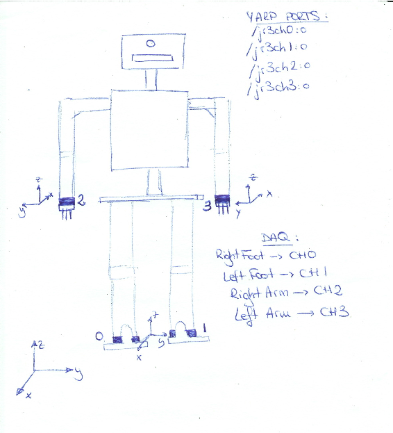

Diagrams
Joint Indexes
| Joint Indexes (CAN bus) | Joint Indexes (YARP ports) |
|---|---|
.png) |
.png) |
Joint Directions of Rotation
| Joint Directions of Rotation |
|---|
 |
DH Coordinate Systems

Link Lengths

Link Names
graph TD
%% head and some trunk
FrontalNeck[FrontalNeck]
AxialNeck[AxialNeck]
FrontalNeck-->|FrontalNeck| AxialNeck
FrontalTrunk[FrontalTrunk]
AxialNeck-->|AxialNeck|FrontalTrunk
%% rightArm
FrontalRightShoulder[FrontalRightShoulder]
FrontalTrunk-->|FrontalRightShoulder|FrontalRightShoulder
SagittalRightShoulder[SagittalRightShoulder]
FrontalRightShoulder-->|SagittalRightShoulder|SagittalRightShoulder
AxialRightShoulder[AxialRightShoulder]
SagittalRightShoulder-->|AxialRightShoulder|AxialRightShoulder
FrontalRightElbow[FrontalRightElbow]
AxialRightShoulder-->|FrontalRightElbow|FrontalRightElbow
AxialRightWrist[AxialRightWrist]
FrontalRightElbow-->|AxialRightWrist|AxialRightWrist
FrontalRightWrist[FrontalRightWrist]
AxialRightWrist-->|FrontalRightWrist|FrontalRightWrist
%% more trunk
AxialTrunk[AxialTrunk]
FrontalTrunk-->|FrontalTrunk|AxialTrunk
Root[Root]
AxialTrunk-->|AxialTrunk|Root
%% rightLeg
AxialRightHip[AxialRightHip]
Root-->|AxialRightHip|AxialRightHip
SagittalRightHip[SagittalRightHip]
AxialRightHip-->|SagittalRightHip|SagittalRightHip
FrontalRightHip[FrontalRightHip]
SagittalRightHip-->|FrontalRightHip|FrontalRightHip
FrontalRightKnee[FrontalRightKnee]
FrontalRightHip-->|FrontalRightKnee|FrontalRightKnee
FrontalRightAnkle[FrontalRightAnkle]
FrontalRightKnee-->|FrontalRightAnkle|FrontalRightAnkle
SagittalRightAnkle[SagittalRightAnkle]
FrontalRightAnkle-->|SagittalRightAnkle|SagittalRightAnkle
%% leftLeg
AxialLeftHip[AxialLeftHip]
Root-->|AxialLeftHip|AxialLeftHip
SagittalLeftHip[SagittalLeftHip]
AxialLeftHip-->|SagittalLeftHip|SagittalLeftHip
FrontalLeftHip[FrontalLeftHip]
SagittalLeftHip-->|FrontalLeftHip|FrontalLeftHip
FrontalLeftKnee[FrontalLeftKnee]
FrontalLeftHip-->|FrontalLeftKnee|FrontalLeftKnee
FrontalLeftAnkle[FrontalLeftAnkle]
FrontalLeftKnee-->|FrontalLeftAnkle|FrontalLeftAnkle
SagittalLeftAnkle[SagittalLeftAnkle]
FrontalLeftAnkle-->|SagittalLeftAnkle|SagittalLeftAnkle
%% leftArm
FrontalLeftShoulder[FrontalLeftShoulder]
FrontalTrunk-->|FrontalLeftShoulder|FrontalLeftShoulder
SagittalLeftShoulder[SagittalLeftShoulder]
FrontalLeftShoulder-->|SagittalLeftShoulder|SagittalLeftShoulder
AxialLeftShoulder[AxialLeftShoulder]
SagittalLeftShoulder-->|AxialLeftShoulder|AxialLeftShoulder
FrontalLeftElbow[FrontalLeftElbow]
AxialLeftShoulder-->|FrontalLeftElbow|FrontalLeftElbow
AxialLeftWrist[AxialLeftWrist]
FrontalLeftElbow-->|AxialLeftWrist|AxialLeftWrist
FrontalLeftWrist[FrontalLeftWrist]
AxialLeftWrist-->|FrontalLeftWrist|FrontalLeftWrist
- Github: teo-link-names.pdf
- Gitbook:
COGs
| COGs |
|---|
 |
F/T sensors
F/T sensors (Ports, channels and coordinate systems)
| F/T sensors (Ports and channels) |
|---|
|  |
F/T sensors (Mechanical)
- Github: Jr3 50M31 corregido.pdf
- Gitbook:
Lacquey Fetch
This sketches were made with SolidWorks in order to provide the position of the next joints, in this case the fingers from the origin of the hand, not to provide detailed mechanical annotations for the hand.
Lacquey Fetch (Hand)
- Github: fetch-hand.pdf
- Gitbook:
Lacquey Fetch (Proximal Falange)
- Github: fetch-proximal-falange.pdf
- Gitbook: